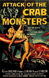

The Birdhouse
http://www.birdhouse.org
Scrolling text along the bottom of the site says, "I must not think bad thoughts..." but they're so tasty, those thoughts which coagulate around your imagination causing disruption, disturbance and neglect. Feed your carnal needs and devour this phenomenal site which is best described as an artists' commune. This site is a drug: a sick, sagacious lyric in electronic sing-song. Indulge and be indulged alike. (For the full story behind this site, see Spotlight, page 60.)
Robert Altman
http://www.cea.edu/ robert/x.index.html
Most likely, unsuspecting browsers happen upon this site expecting to find the famed director. However, there is so much content here, the legend o' film is quickly forgotten. Altman, a former photojournalist for Rolling Stone, packs his site with awesome footage of Timothy Leary, Iggy Pop, Mick Jagger, Abbie Hoffman and many other popular and subversive figures from the past four decades. Beyond the photos, there's much more to discover in this pleasure chest.
House Rabbit Society
http://www.psg.lcs.mit.edu/ ~carl/paige/HRS-home.html
If you can't stop 'em, adopt 'em. Just in time for Easter, the House Rabbit Society's site is devoted to rescuing abandoned bunnies and giving them new homes. The HRS is not an obscure organization; it has offices all across the U.S. and can help you adopt no matter where you live. Visit the "Bunny Gallery" to pick your own rabbit: White, black, brown, potty-trained -- if only dating sites were so simple. At the very least, check out the abundant bunny info pages and learn how to say "rabbit" in Esperanto.
IRS Home Page
http://www.irs. ustreas.gov/prod/
Most surprising is the opening line: "We hope you'll find this site useful and fun." It may sound like we're sucking up to The Man in hopes of a tax break, but the IRS Home Page is actually entertaining and no question, useful. The jokes are corny, but the graphics are well-displayed -- not the drab product you're used to seeing from a government agency. IRS forms, publications, locations for filing and tax FAQs are available at the site as well. Leona Helmsley and Willie Nelson have no excuses now.
Dr. Fellowbug's Laboratory of Fun & Horror
http://www. dtd.com/bug/
Need a break from your dreary day? Visit Fellowbug's Lab for some old-fashioned fun and nonsense. Inside you'll find "The Daily Noise," a new random downloadable sound clip every day, "Letter R.I.P," a variation of Hangman in which guessing wrong makes the limbs fall off a zombie and "The Keepers of Lists" who compile responses to topics like "Reasons Why Chicks Dig Fabio" or "Frat Guy Nicknames For Dole."
Roadside on the Web
http://www1.usa1.com/ ~roadside/RoadsideWebPage.html
 Grease, when prepared right, rivals the cuisine at any haughty five-star restaurant, and Roadside On the Web is your guide to
finding the best cholesterol in the country. Roadside, an online companion to the paper-and-ink magazine of the same name,
delves into diner culture with reviews, recipes, pleas for preservation, interviews and info on purchasing a real diner of your own.
Grease, when prepared right, rivals the cuisine at any haughty five-star restaurant, and Roadside On the Web is your guide to
finding the best cholesterol in the country. Roadside, an online companion to the paper-and-ink magazine of the same name,
delves into diner culture with reviews, recipes, pleas for preservation, interviews and info on purchasing a real diner of your own.
Firefly
http://www.ffly.com
You're a big R.E.M. fan, but will you like John Coltrane? Head over to Firefly, and let their computers figure it out for you. At Firefly you begin by rating a whole mess of albums and artists. The more you rate, the smarter the service gets, eventually replacing those suggestions of Yanni with Tom Waits. Their database is immense, with downloadable sound clips, reviews and bios. For now, Firefly is limited to music, but expansion plans call for movies, books and Web sites to be added this year.
Feed
http://www.feedmag.com
When it comes to the Web, Feed's Editor in Chief, Steven Johnson, is both a skeptic and an admirer. His catechizing editorial both questions and makes observations on the roles multimedia and the Internet are playing and will continue to play in our rapidly expanding technoculture -- as does much of this e-zine's remarkably well-written content. But it's way more than just a tech-heavy 'zine -- Feed also includes stories and debates on mass media, film, music and more. All in all, Feed is easily one of the most thought-provoking sites on the Web.
SumoWeb!
http://www-bcf.usc.edu/ ~tmccarth/sumo.htm
Now you too can learn more about the art/sport of sumo wrestling. Be a hit at all the parties. Impress your friends with lines like "I here you can achieve Yusho by knocking your opponent out of the dohyo, okuridashi style." At SumoWeb! you can browse current statistics detailing Japan's top sumo talent, or worst (poor Ozeki Takanonami is constantly ridiculed for his losing record). The page also offers visitors a glossary of fun-to-pronounce words, sport rules and regulations, news reports, topical essays and a few wrestling tips to try on dad.
The Cabinet of Dr. Casey
http://www.audionet.com/jukebox.htm
 Billed as the Horror Web Page, come feed your horror jones with archives of horror sights and sounds. "Dr." Casey Hopkins has also included an original horror atlas and timeline compiled by David Carroll so you can check out what horror movies take place in Wyoming or the big horror events of the 1530s. Best of all is the The Horror Movie Poster Archive -- don't miss the original art from classics like Attack of the Crab Monsters.